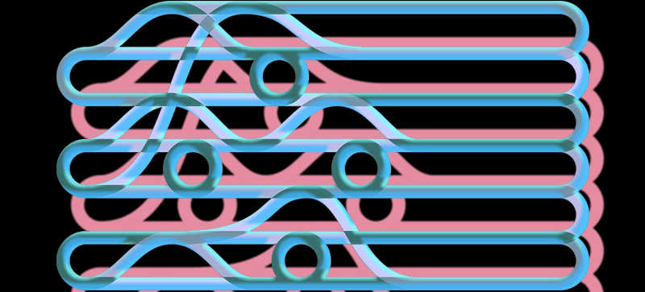

1 / 4
3 / 4

Komputer adalah mesin atau alat yang dipakai untuk mengolah data dengan mengikuti perintah yang telah di program ,komputer biasanya digunakan untuk mengolah data atau menghitung dan juga dapat digunakan untuk mendesign atau menggambar. Secara umum , komputer juga berisi dengan beberapa komponen di dalamnya ,diantaranya : CPU(Central Processing Unit),Monitor(Layar Komputer),Mouse,Keyboard juga di tambah Printer sebagai pelengkap. Di zaman sekarang atau saat ini komputer sudah semakin canggih ,nah komputer pada awal mulanya tidak berukuran kecil,canggih,dan cepat seperti pada zaman sekarang ,Ternyata tercatat bahwa terdapat 5 generasi dalam sejarah komputer,dan berikut penjelasanya

sebuah komputer yang dapat berpikir layaknya manusia,biarpun komputer tersebut masih dalam tahap wacana tetapi baru-baru ini muncul berbagai macam robot yang bisa berpikir layaknya seorang manusia,contohnya yaitu robot yang sedang viral baru-baru ini Robot Shopia ,robot tersebut bisa menjawab bahkan mengobrol seperti seorang manusia dan contoh lain juga seperti program baru yang di ciptakan oleh google yaitu Google Asisten dan juga Program diciptakan oleh Apple bernama Siri semoga saja dengan adanya artificial intelegence ini berdapampak positif bagi kehidupan manusia